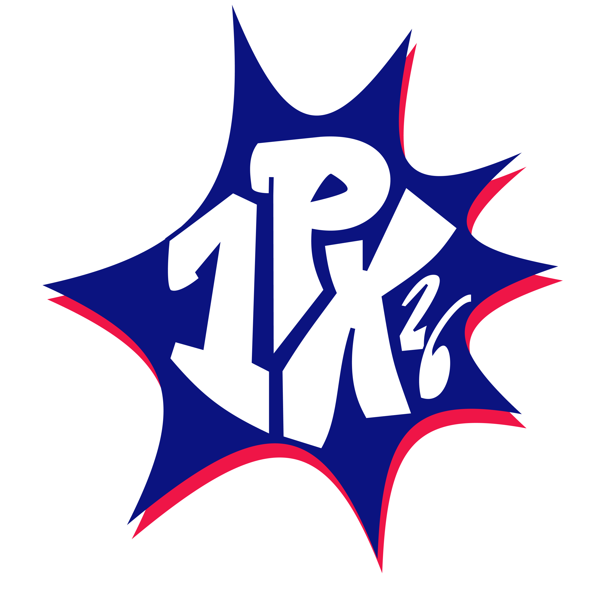
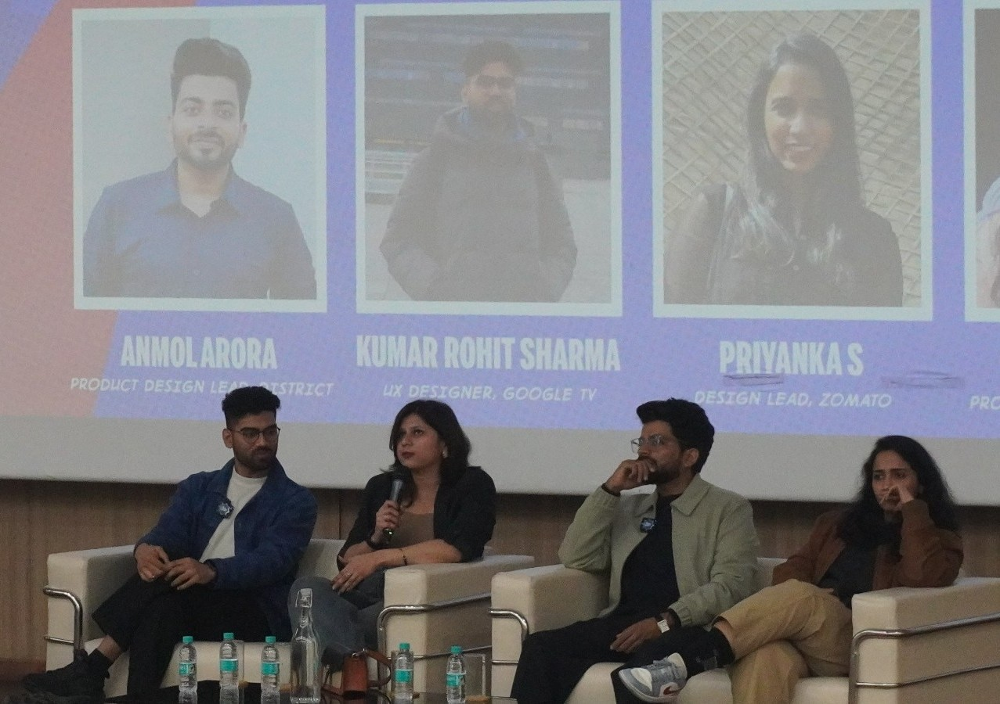

Design Conference 2026: Two Days That Changed the Way I Think About DesignIndraprastha Institute of Technology, Delhi

There are conferences where you simply attend sessions, take a few notes, and move on. Then there are conferences that genuinely leave a lasting impact on how you think and approach your work.
For me, 1Pixel Design Conference 2026 was definitely the latter.
Over two days, I had the opportunity to learn from experienced designers, product leaders, and industry experts who shared practical insights about design, technology, careers, and building products that truly solve problems.
What made the event special wasn't just the speaker lineup—it was the conversations, the interactions, and the ideas that continued to stay with me long after the conference ended.
Learning Beyond the Stage
Unlike many conferences where you simply listen, 1Pixel encouraged participation.
Whether it was asking questions, discussing ideas with fellow attendees, or hearing different perspectives from industry professionals, every session felt interactive and engaging.
Instead of filling pages with notes, I left with ideas that I wanted to implement immediately.
Peter Dohyung Lee: Why Timing Matters
One of the sessions that stayed with me the most was by Peter Dohyung Lee.
He spoke about product potential and explained how timing often determines whether an idea succeeds or fails.
One example instantly resonated with me.
He talked about Google Glass.
When it first launched, many people viewed it as futuristic but unnecessary.
Today, with AI becoming part of everyday life and wearable technology improving rapidly, the same idea feels far more relevant than it did years ago.
That discussion reminded me that innovation isn't only about having a great idea.
Sometimes the world simply isn't ready yet.
A Memorable Interaction with Mayur Chaudhary
One of the most enjoyable moments came during Mayur Chaudhary's session.
He asked the audience:
"If not Chrome, which browser would you choose?"
I got the opportunity to answer.
I mentioned Comet, explaining how its AI-powered search features make it easier to compare products, prices, and information while searching online.
It may have been a short interaction, but participating instead of simply listening made the session much more memorable.
Sometimes, a single conversation teaches more than an entire presentation.

Guidance That Stayed With Me
I also had the chance to speak with Aryendra bhaiya.
We discussed career growth, learning continuously, and making thoughtful decisions instead of chasing every new trend.
It wasn't a formal session.
It was simply an honest conversation—but one that gave me much more clarity about how I want to approach my career going forward.
Meeting Gaurav Juyal
One of the biggest highlights of the conference was meeting Gaurav Juyal.
Like many people of my generation, I grew up watching Art Attack.
Seeing him in person felt surreal.
Even though it was only for a brief moment, it instantly brought back so many childhood memories.
Some moments simply make you smile—and this was definitely one of them.
Industry Panel Discussion
The conference concluded with a panel discussion featuring experienced industry professionals.
The discussion wasn't just about design trends.
It focused on how products are built in the real world, what companies actually value, and how designers should prepare themselves for the future.
What impressed me most was how practical every discussion felt.
In fact, I started making improvements to my portfolio almost immediately after returning home.
That's probably the biggest sign that the conference created a real impact.

Conference Merch
No conference experience is complete without picking up some merch, and 1Pixel did not disappoint. The design goodies, stickers, and conference kit were a nice touch — a tangible reminder of two incredible days.
My Biggest Takeaways
Here are the lessons I'm taking with me:
- Great ideas need the right timing.
- Ask questions instead of only listening.
- AI is becoming an essential design companion.
- Build products that solve real problems.
- Your portfolio should demonstrate your thinking—not just your visuals.
- Networking often teaches as much as formal sessions.
Final Thoughts
Attending the 1Pixel Design Conference 2026 was much more than adding another event to my calendar.
It helped me think differently about design, products, technology, and my own career journey.
I'm grateful to every speaker, panelist, volunteer, and organizer who made these two days so memorable.
A huge thank you to the 1Pixel Team for putting together such a well-executed conference.
I'm already looking forward to the next edition.